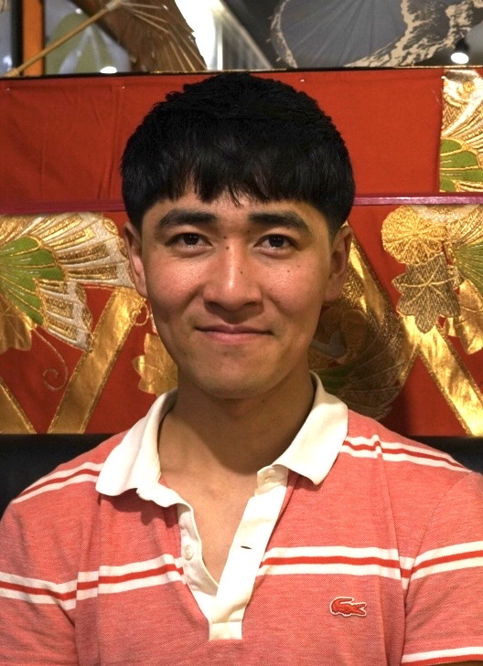

LATEST / 最新企画
2026
企画準備中
ゆとりもんパルナス
ゆとりもんパルナス
大忘年会
〜2022–2026年を振り返る〜
久しぶりに集まる4人。
休んでいた間のこと、最近のこと。
2022年から2026年を、ゆっくり振り返ります。
公開のお知らせは、詳細が決まり次第こちらに掲載します。
ABOUT / 私たちについて
それぞれの日々を、
持ち寄って。
きいちゃん、ふっきー、太郎、みっつーの4人による「ゆとりもんパルナス」。2021〜2022年に活動し、2026年、久しぶりの収録を企画しています。
これまでに、ふっきーときいちゃん、それぞれの個展会場でインタビュー動画を収録・公開してきました。 メンバーの制作や活動について、話を聞く機会もつくってきました。
離れて過ごしていた間に、どんなことがあったのか。近況や思い出を持ち寄り、4人で話す時間をつくります。
MEMBERS / メンバー
集まるのは、この4人。
ふっきー
太郎

長野県王滝村在住のアーティスト（絵描き）。 読書会、映画鑑賞、旅、空間づくりが好き。 コーヒーは焙煎からドリップまで。
みっつー
ひみっつー
すきなたべものあんみっつー
ARCHIVE / これまで
2021–2022
そして、2026。
これまでの動画は、YouTubeチャンネルからご覧いただけます。
LINKS & CONTACT / SNS・連絡先
動画も、これからのことも。
動画はYouTubeで。InstagramとXも、こちらからご覧いただけます。
各SNSは新しいタブで開きます。
CONTACT
お問い合わせ
ご連絡は、メールでお願いいたします。